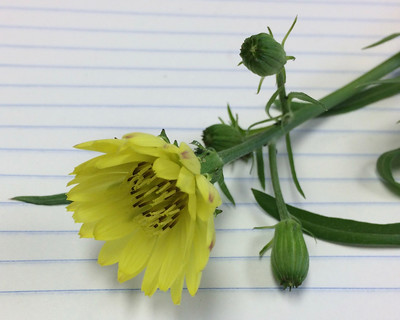
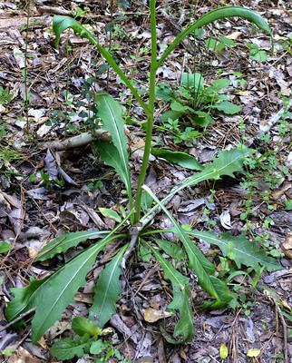

Texas Dandelion
Scientific Name(s): Pyrrhopappus pauciflorus
Abundance: common
What: root, young leaves
How: root as tea, coffee; leaves as bitter greens
Where: fields, disturbed areas, roadsides
When: spring
Nutritional Value: minerals, vitamins C & A
Dangers: don't mistake for Common Groundsel
Open flower and never-opened flower buds.

Open flower and previously-opened flower.

Close-up of flower. Note the dark stamens.


Back and front of flower, along with flower stem. Note the tan structures.

Base rosette and stem. Note the base leaves lack deep serrations.

Mature leaf.

As more and more people move into Texas from lesser desirable states the fields of our yellow Texas Dandelion leads to confusion in late spring and early summer. The flower looks like a true dandelion, except for the dabs of brown on the stamens. Closer observation shows multiple flowers and leaves growing off the thick, green stem that grows up to nearly three feet tall. The leaves lack the sharp spearpoint and backwards pointing pointy lobes. These signs should indicate you don't have a true dandelion. But that's okay! You can use the Texas Dandelion the same as true dandelions.
The flowers of Texas Dandelion make an okay tea, perhaps not quite as rich in flavor as true dandelions. Remember to remove the green "collar" from the flower just as you must with true dandelions. You can also make jelly from these flowers which actually tastes pretty dang good.
The leaves of Texas Dandelion are used in the same manner as true dandelion leaves but unfortunately they aren't quite as nutritious. Texas Dandelion roots can be dried for tea or roasted for a coffee-substitute. The bitter flavor of the roots are becoming popular with high-end bartenders making their own concoctions where these roots replace traditional bitters.